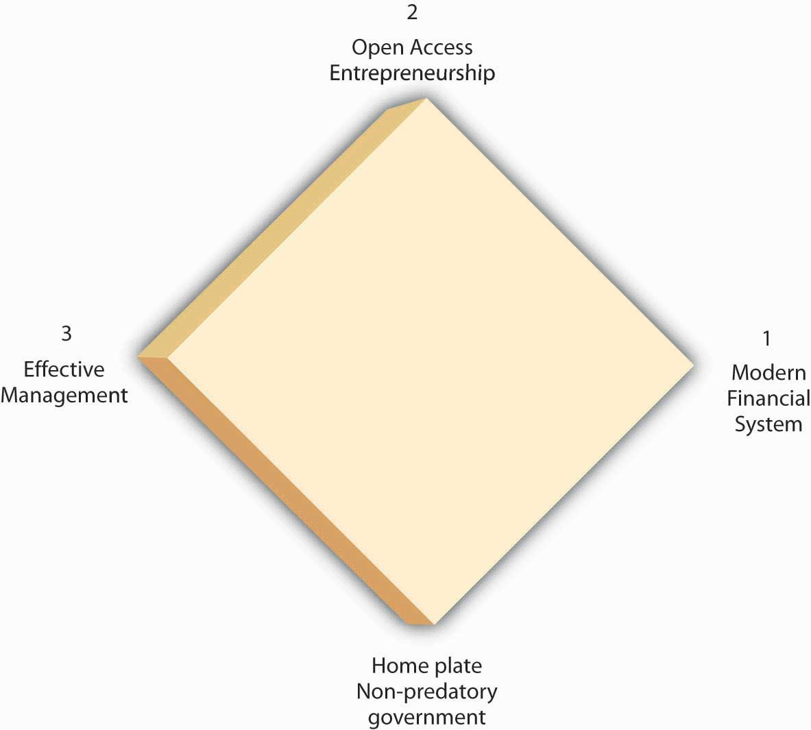

Over the last two decades or so, many scholars, including the author of this textbook, have examined the link between financial development and economic growth. They have found that financial repression, severe underdevelopment of financial intermediaries and markets, can stymie growth and that financial development paves the way for growth. The reason is clear: by reducing asymmetric information and tapping economies of scale (and scope), the financial system efficiently links investors to entrepreneurs, ensuring that society’s scarce resources are allocated to their highest valued uses and that innovative ideas get a fair trial.
The research agenda of some of those scholars, including the author of this textbook, has recently broadened to include more of the institutional factors that enhance or reduce economic growth, sustained rightward movements of Ynrl. A leading model, set forth by two economic historians who teach economics at New York University’s Stern School of Business,w4.stern.nyu.edu/economics/facultystaff.cfm?doc_id=1019 is called the growth diamond or diamond of sustainable growth.w4.stern.nyu.edu/sternbusiness/spring_2007/sustainableGrowth.html Imagine a baseball or softball diamond. At the bottom of the diamond is home plate, the most important base in the game, where the player both begins and, if successful, ends his or her journey. Looking out from home, first base is at the right corner; second base is at the top of the diamond, dead ahead; and third base is at the diamond’s left corner. To score a run, a player must return to home plate after touching first, second, and third base, in that order. Countries are no different than ballplayers in this regard. For a country to get rich, it needs to progress from base to base in the proper order.
In the growth diamond, home plate is represented by government, first base by the financial system, second base by entrepreneurs, and third base by management. To succeed economically, as depicted in Figure 23.8 "The growth diamond", a country must first possess a solid home plate, a government that at a minimum protects the lives, liberty, and property of its citizens. Next, it must develop an efficient financial system capable of linking savers/investors to people with good business ideas, the entrepreneurs at second base. The managers at third take over after a product has emerged and matured.
Figure 23.8 The growth diamond
The growth diamond is a powerful model because it can be applied to almost every country on earth. The poorest countries never left home plate because their governments killed and robbed their citizens. Poor but not destitute countries never made it to first base, often because their governments, while not outright predatory, restricted economic liberty to the point that financiers and entrepreneurs could not thrive. In many such countries, the financial system is the tool of the government (indeed many banks in poor countries are owned by the state outright), so they allocate resources to political cronies rather than to the best entrepreneurs. Countries with middling income rounded the bases once or twice but found that managers, entrepreneurs, and financiers co-opted the government and implemented self-serving policies that rendered it difficult to score runs frequently. Meanwhile the rich countries continue to rack up the runs, growing stronger as players circle the bases in a virtuous or self-reinforcing cycle.
In the early nineteenth century, Ontario, Canada (then a colony of Great Britain), and New York State (then part of a fledgling but independent United States) enjoyed (perhaps hated is a better word here!) a very similar climate, soil type, and flora and fauna (plants and animals). Yet the population density in New York was much higher, farms (ceteris paribus) were worth four times more there than on the north side of Lake Ontario, and per capita incomes in New York dwarfed those of Ontario. What explains those differences?
The growth diamond does. By the early 1800s, the United States, of which New York State was a part, had put in place a nonpredatory government and a financial system that, given the technology of the day, was quite efficient at linking investors to entrepreneurs, the activities of whom received governmental sanction and societal support. A nascent management class was even forming. Ontario, by contrast, was a colony ruled by a distant monarch. Canadians had little incentive to work hard or smart, so they didn’t, and the economy languished, largely devoid of banks and other financial intermediaries and securities markets. As late as the 1830s, New York was sometimes “a better market for the sale of Canada exchange on London than Canada itself.”T. R. Preston, Three Years’ Residence in Canada, from 1837 to 1839, 2 vols., (London: Richard Bentley 1840), 185. Only after they shed their imperial overlords and reformed their domestic governments did Canadians develop an effective financial system and rid themselves of anti-entrepreneurial laws and sentiments. The Canadian economy then grew with rapidity, making Canada one of the world’s richest countries.
A narrower and more technical explanation of the higher value of New York farms comparable to Canadian farms in size, soil quality, rainfall, and so forth is that interest rates were much lower in New York. Valuing a farm is like valuing any income-producing asset. All it takes is to discount the farm’s expected future income stream. Holding expected income constant, the key to the equation becomes the interest rate, which was about four times lower in New York (say, 6 percent per year versus 24 percent). Recall that PV = FV/(1 + i). If FV (next year’s income) in both instances is 100, but i = .24 in Canada and .06 in New York, an investor would be willing to lease the New York farm for a year for 100/1.06 = $94.34, but the Canadian farm for only 100/1.24 = $80.65. The longer the time frame, the more the higher Canadian interest rate will bite. In the limit, we could price the farms as perpetuities using the equation PV = FV/i. That means the New York farm would be worth PV = 100/.06 = $1,666.67, while the Canadian farm would be worth a mere PV = 100/.24 = $416.67 (which, of course, times 4 equals the New York farm price). Canadian land values increased when Canadian interest rates decreased after about 1850.
One important implication of the growth diamond is that emerging (from eons of poverty) or transitioning (from communism) economies that are currently hot, like those of China and India, may begin to falter if they do not strengthen their governance, financial, entrepreneurial, and management systems. Some of today’s basket-case economies, including that of Argentina, were once high fliers that ran into an economic brick wall because they inadequately protected property rights, impeded financial development, and squelched entrepreneurship.
Although currently less analytically rigorous than the AS-AD model, the growth diamond is more historically grounded than the AS-AD model or any other macro model and that is important. As storied economist Will Baumol once put it,
We cannot understand current phenomena…without systematic examination of earlier events which affect the present and will continue to exercise profound effects tomorrow…[T]he long run is important because it is not sensible for economists and policymakers to attempt to discern long-run trends and their outcomes from the flow of short-run developments, which may be dominated by transient conditions.Will Baumol, “Productivity Growth, Convergence, and Welfare: What the Long-Run Data Show,” American Economic Review 76 (December 1986): 1072–1086, as quoted in Peter L. Bernstein, Against the Gods: The Remarkable Story of Risk (New York: John Wiley and Sons, 1996), 181.